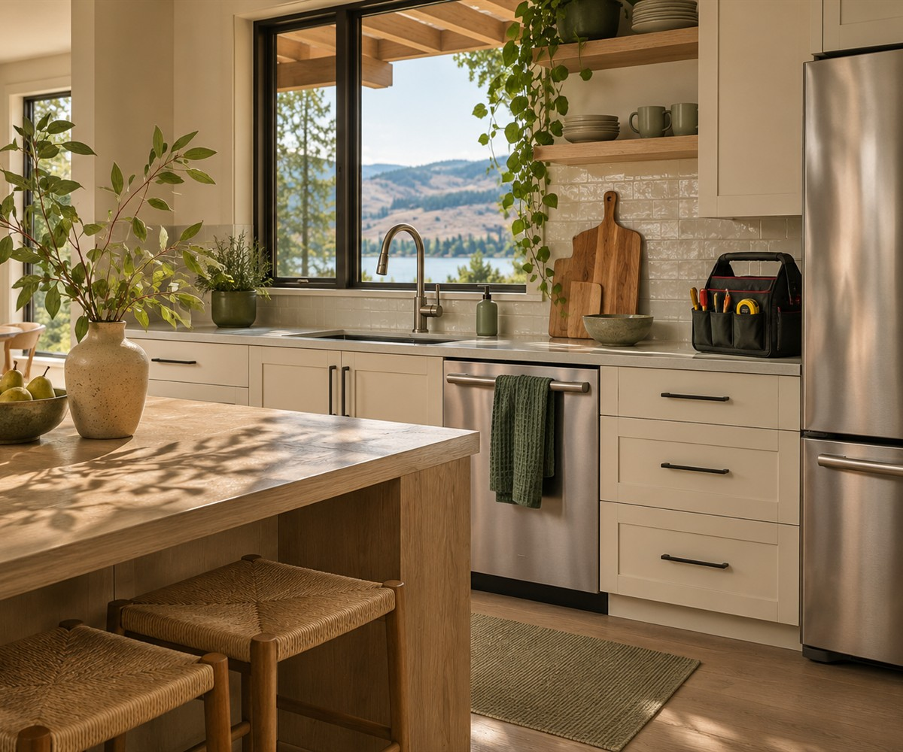

Frigos et congélateurs
Votre appareil ne garde plus les aliments au frais? Obtenez de l’aide et retrouvez la tranquillité dans votre cuisine.
Obtenir de l’aideLe frigo qui garde tout au frais. La laveuse qui suit votre rythme. Nous aidons vos appareils du quotidien à retrouver leur utilité.

Une marque connue?
Parlons-en ensemble.
De la cuisine à la salle de lavage, nos techniciens qualifiés réparent les appareils sur lesquels vous comptez.
Votre appareil ne garde plus les aliments au frais? Obtenez de l’aide et retrouvez la tranquillité dans votre cuisine.
Obtenir de l’aideDe la vaisselle qui reste sale à la cuisinière qui ne chauffe plus, redonnons le bon rythme à votre cuisine.
Obtenir de l’aideLe lavage s’accumule? Nous réparons laveuses et sécheuses pour vous aider à reprendre votre routine.
Obtenir de l’aideVous faites la réparation vous-même? Nous fournissons des pièces d’électroménagers. Apportez vos numéros de modèle et de série : nous vous aiderons à trouver la bonne pièce.
Demander une pièceRegardez à l’intérieur de la porte, sur le cadre ou à l’arrière de l’appareil.
Appelez-nous ou indiquez le type d’appareil, le problème et le numéro de modèle si vous l’avez.
Notre équipe discutera des possibilités de réparation ou de la disponibilité des pièces avec vous.
Organisez une réparation ou obtenez la pièce nécessaire. Nous confirmerons les détails directement avec vous.
Établis à Vernon, nous desservons aussi les communautés voisines. Appelez-nous pour vérifier la disponibilité du service à votre adresse.
4410 27th Street
Vernon, BC V1T 4Y4
Nous réparons la plupart des grandes marques d’électroménagers, notamment Electrolux, Frigidaire, Kelvinator, White Westinghouse, Whirlpool, Maytag, KitchenAid, Amana et Kenmore. Contactez-nous avec votre marque et votre modèle pour confirmer.
Oui. Nous fournissons des pièces aux personnes qui font leurs propres réparations. Préparez vos numéros de modèle et de série pour nous aider à identifier la bonne pièce et à vérifier sa disponibilité.
Le type d’appareil, la marque, les numéros de modèle et de série, une description du problème et votre ville nous sont utiles. Vous ne trouvez pas le numéro de modèle? Appelez-nous pour obtenir de l’aide.
Oui. Nous desservons notamment Coldstream, Lumby, Armstrong, Silver Star et Predator Ridge. Appelez pour confirmer la disponibilité du service à votre adresse.
Besoin d’une réparation ou d’une pièce? Parlez-nous de votre appareil. Tout commence par une conversation.
778-475-3004 ↗communityapplianceparts@gmail.com